Hello, I'm
Delivering end-to-end machine learning and deep learning solutions. Specializing in computer vision, NLP, and Generative AI to drive business value at scale.
I am a results-driven Data Scientist and AI/ML Engineer with hands-on experience delivering end-to-end machine learning and deep learning solutions. Proficient in Python, statistical modeling, data preprocessing, and model deployment.
My expertise spans computer vision (YOLOv8, DenseNet121, OpenCV), NLP/NLU, and Generative AI concepts including LLMs and Transformer architectures. I am experienced in building RESTful ML pipelines with Flask and integrating structured and unstructured data sources.
Adept at communicating analytical insights to non-technical stakeholders and working collaboratively in agile, cross-functional environments, I am seeking to apply advanced analytics and predictive modeling expertise to drive business value at scale.
Geethanjali Institute of Science & Technology, Nellore | 2021 – 2025
Python, SQL, JavaScript, HTML, CSS, Java (familiar), C/C++ (familiar)
Machine Learning, Deep Learning, Statistical Modeling, Feature Engineering, Predictive Modeling, EDA, Scikit-learn, Pandas, NumPy
CNNs, DenseNet121, YOLOv5, YOLOv8, OpenCV, TensorFlow, Keras, PyTorch
NLP/NLU, LLM Fundamentals, Prompt Engineering, Transformers, Generative AI, Text Classification
Big Data Analytics, Spark (familiar), AWS (familiar), Data Pipelines, Streaming vs. Static Data
MySQL, SQL, NoSQL (aware), Graph Databases (Neo4j, GraphX)
Matplotlib, Seaborn, Power BI, Git, GitHub, Flask, RESTful APIs, Jupyter, Docker
Analytical Problem-Solving, Stakeholder Communication, Agile SDLC, Cross-functional Collaboration
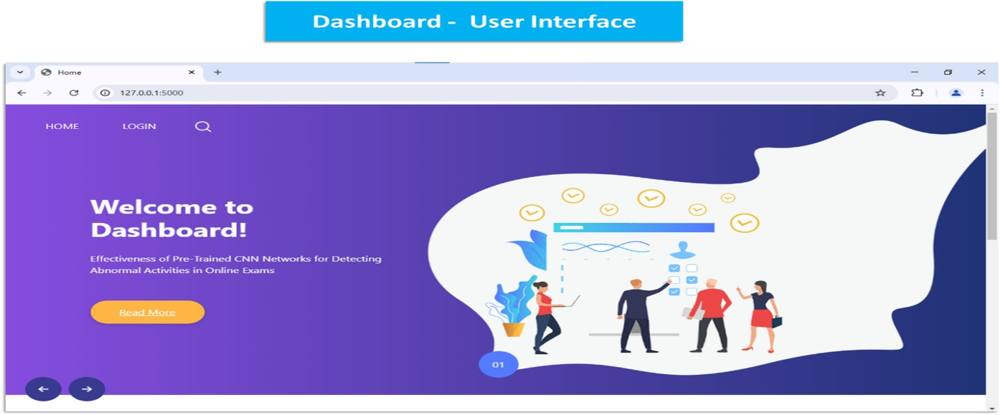
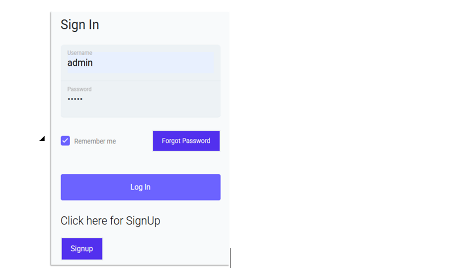
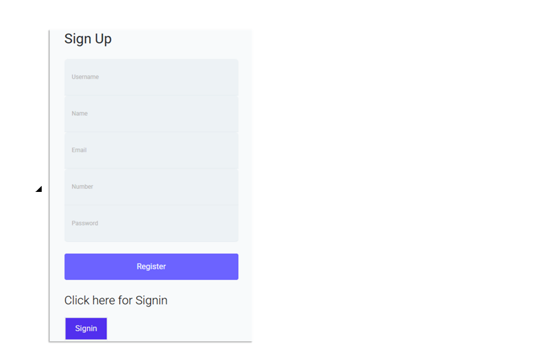
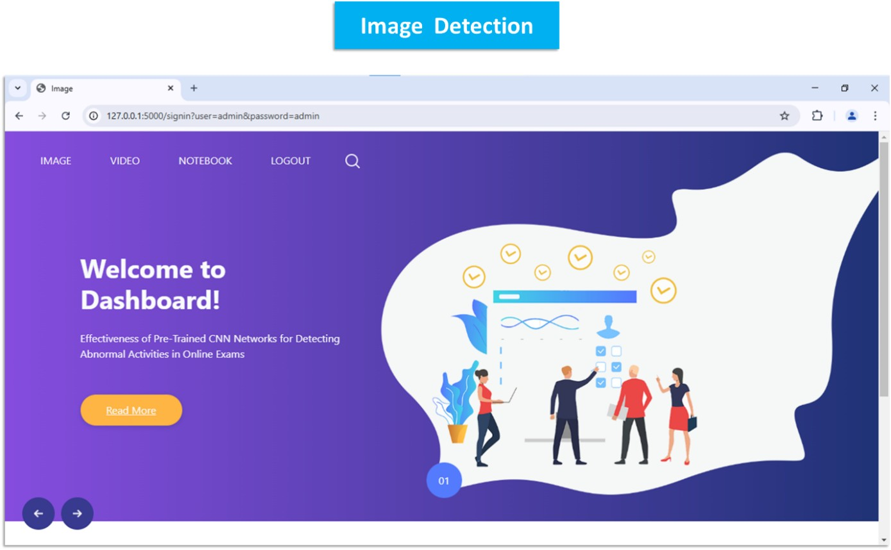
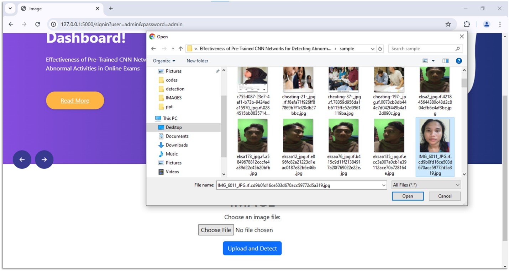
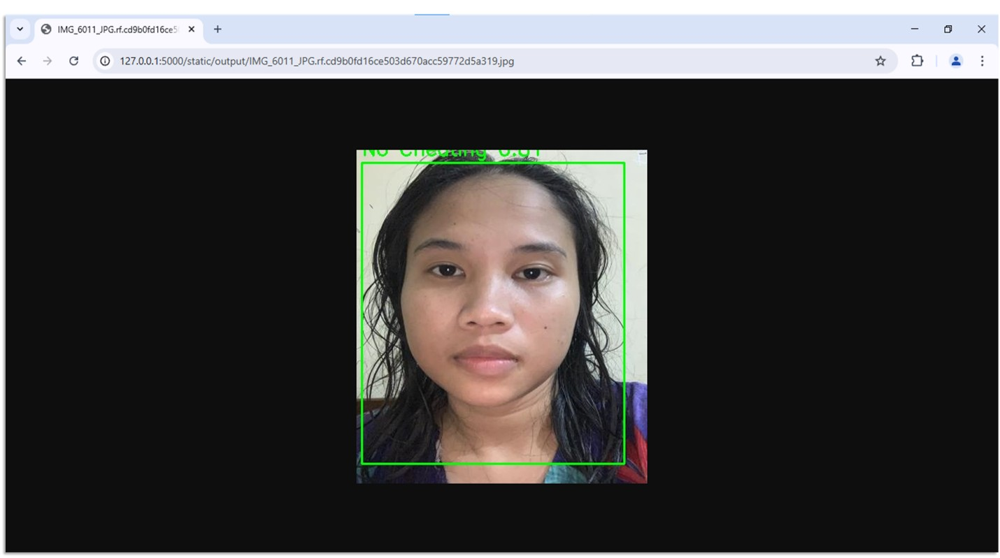
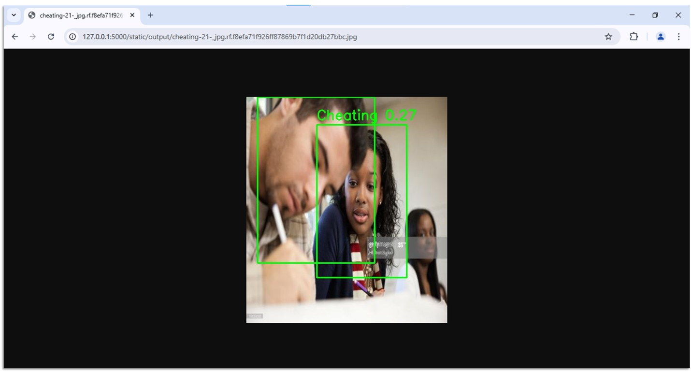
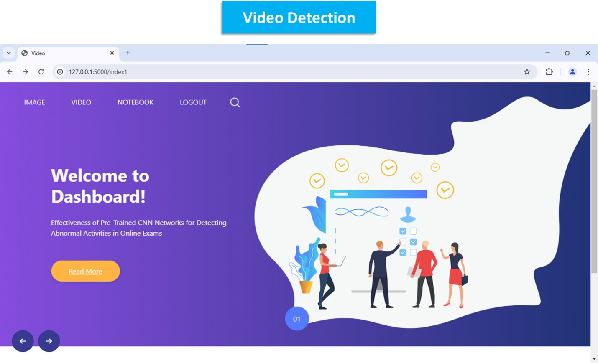
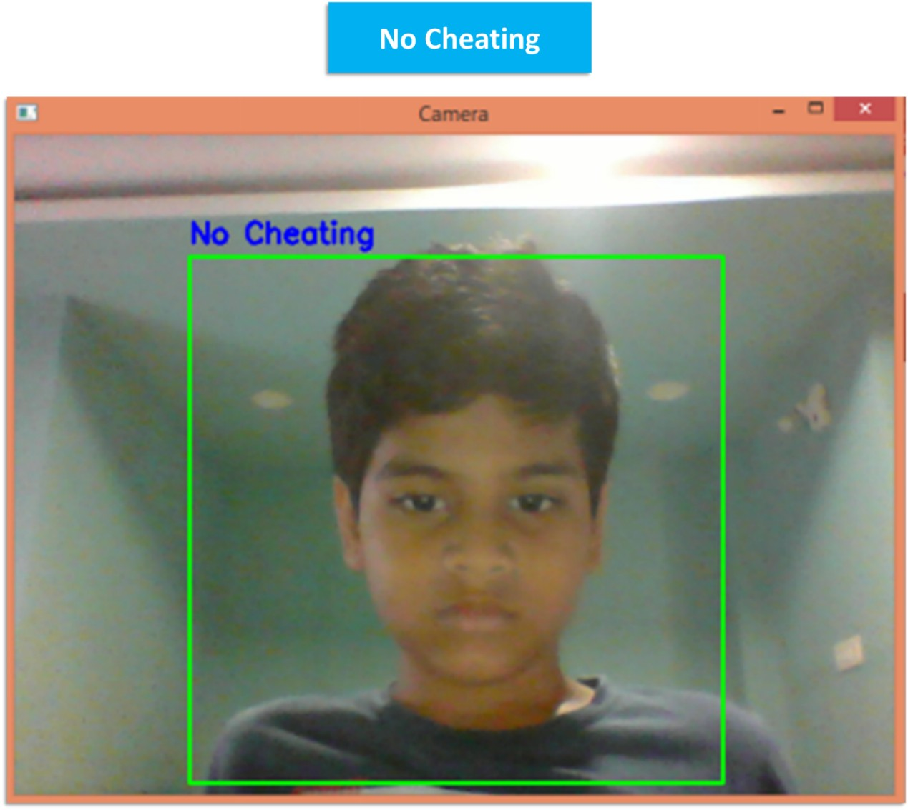
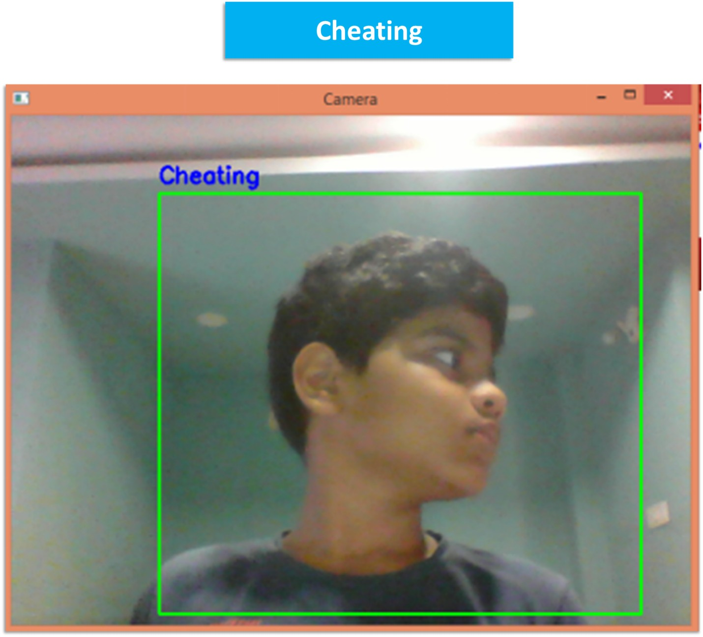
Designed and built a real-time AI proctoring system leveraging deep learning to detect suspicious behaviors (head movement, mobile phone use, anomalous activity).
Built a content-based recommendation engine applying NLP feature extraction and cosine similarity on movie metadata to deliver personalized recommendations.
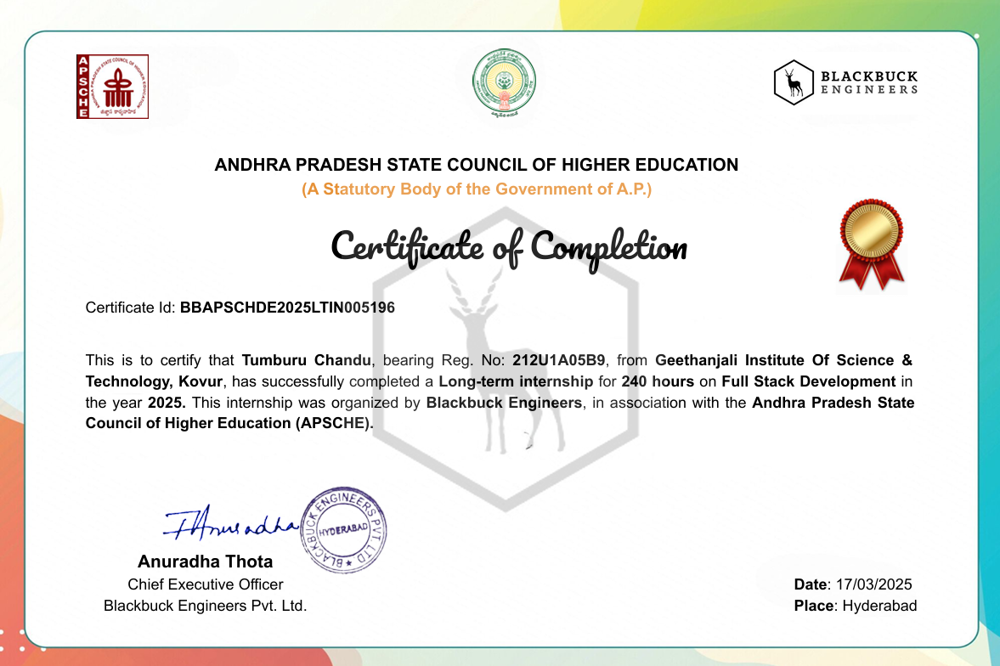
BlackBucks Engineers
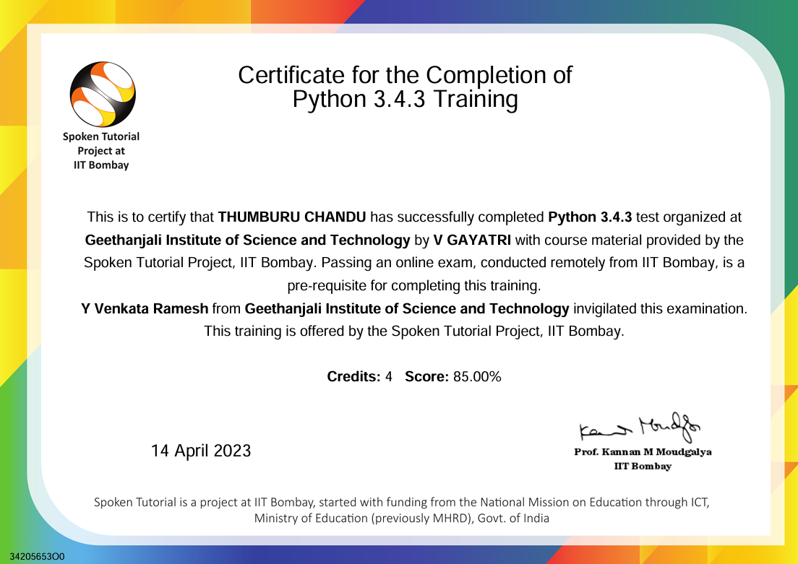
Spoken Tutorial, IIT Bombay
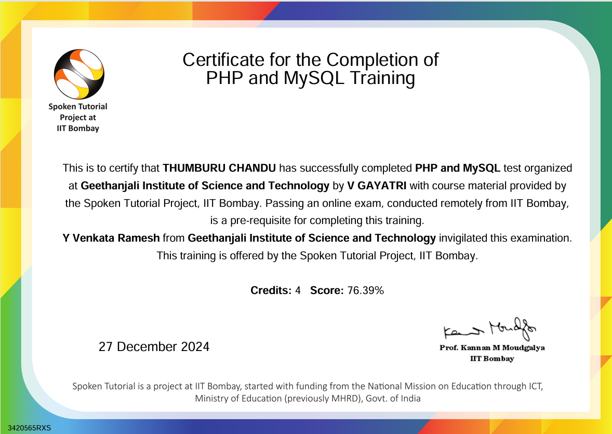
Spoken Tutorial, IIT Bombay
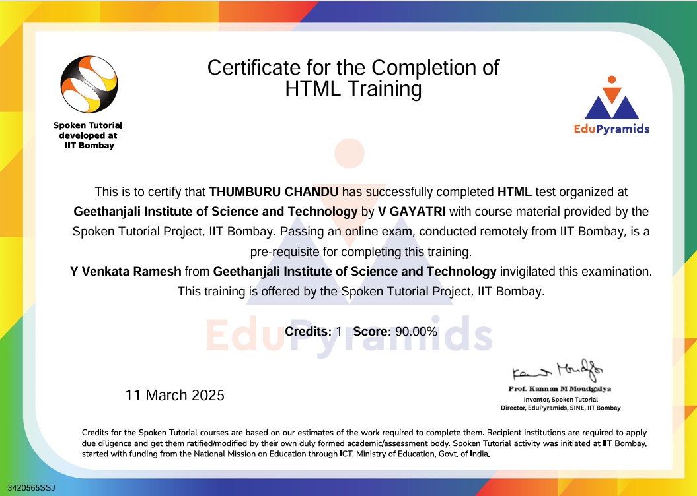
Spoken Tutorial, IIT Bombay
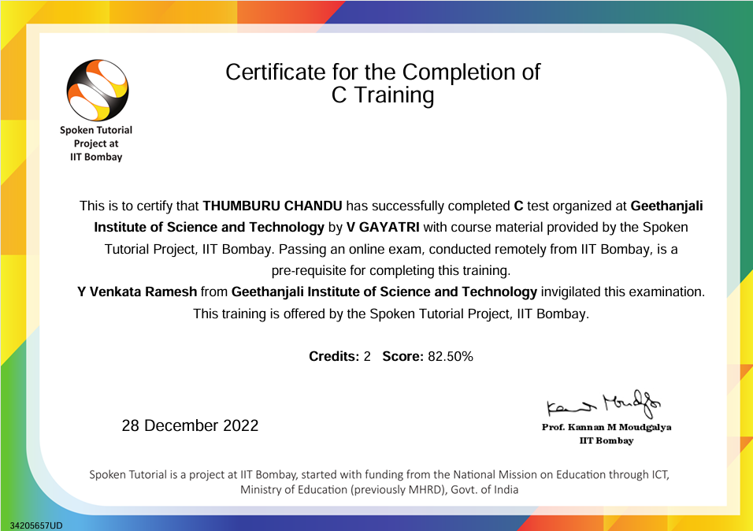
Spoken Tutorial, IIT Bombay
I'm currently looking for new opportunities to apply my advanced analytics and predictive modeling expertise. Whether you have a question or just want to say hi, I'll try my best to get back to you!
Say Hello